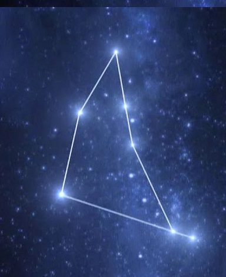

Get ready as the world will be your oyster, as per Capricorn 2019 horoscope! You will come off with flying colors as you will witness a positive transformation in both,
personal and professional life, a whole nine yards, during this phase. The tenth sign of the Zodiac, the Earthy Capricorn, represents that you are an ambitious, determined
and helpful person. It is truly said that, it is better to stock up before the winter comes. As you are also a reliable, practical and hardworking person, it is a perfect
time to think about your future. And remember that, action speaks better than words. Try to improve yourself, think more rationally and make realistic plans, and keep the
eye on the ball, always! For now, keep the worry about your financial investments and savings at bay as there will be better than average results.
Are you planning to buy a new home? Or a more comfortable office? It seems like the most unexpected benefits are just around the corner, and you may win a lottery or get a
promotion, or see the rates of your shares quickly going up! So, be prepared as it is more likely that you may invest in property. It is true that in order to stay mentally
healthy you must be physically fit as well, tells your 2019 Capricorn horoscope. So, tie your shoe laces tightly and just go for a hike or do anything to pump up your
adrenaline flow! What good is all the fortune if you don’t have a healthy heart to enjoy it? You won’t take any unnecessary tensions and avoid over-thinking in your
relationship because you are totally clear about what you want in your life and what your heart desires. In your work or business, you are more likely to impress everyone
as you will come up with more out-of-the-box and creative ideas. You don’t believe in following but you find more new ways to do something. Beware not to spend too much over
something that is not useful and keep your wallet or purse in check because your expenditure is likely to increase in the middle of 2019, so says your Capricorn horoscope
2019.
Especially in the matters related to money, it is better to be safe than sorry, so check everything before making any kind of investment. Always remember that there is no
such thing as free lunch. As we know, nothing interesting is ever one-sided. It seems that you are very lucky and fortunate for the most of part of the year. If you have
any of your long-term plans waiting, or thinking to initiate something new then hold on that thought for a while because Saturn and Uranus will meet in a harmonious
setting, in the second half of the year which is likely to give wonderful results in August and September. Sky is the limit and there are chances for you to achieve new
heights and set remarkable standards, so says your Capricorn horoscope 2019.
| Prev | Home | Next |